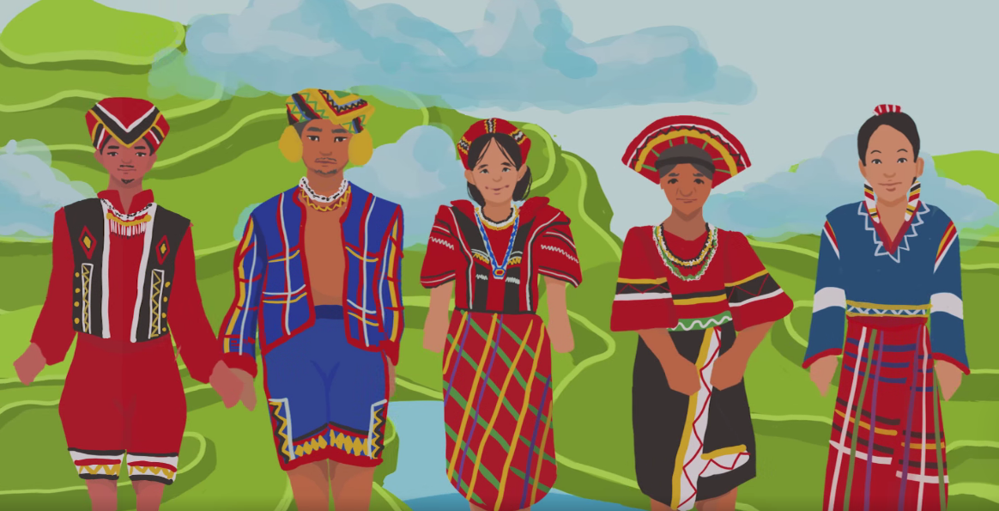

Pangumanong Sikat
A documentary featuring Lumad artist Kath Dalon on how she used her artistry as a call for protest.
February 21, 2023

"Mas pipiliin ko pa na pumalpak sa passion ko kaysa yumaman ng may boss -hev abi."
Hi everyone! I am Alexandra Marcelo, or you can call me Lex or Alexa for short. I am a fourth-year BAMS student from Quezon City. I am interested in many different types of art, but I am particularly drawn to the visual arts, as I have enjoyed drawing since I was young. Moreover, I am eager to learn and discover new things aside from my interests.
